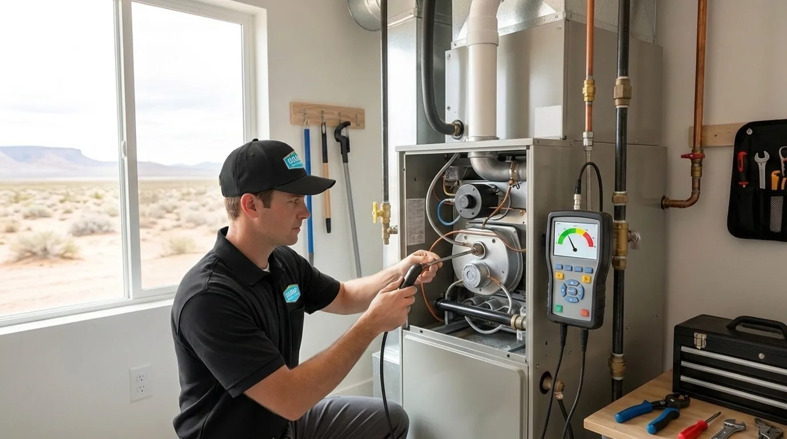
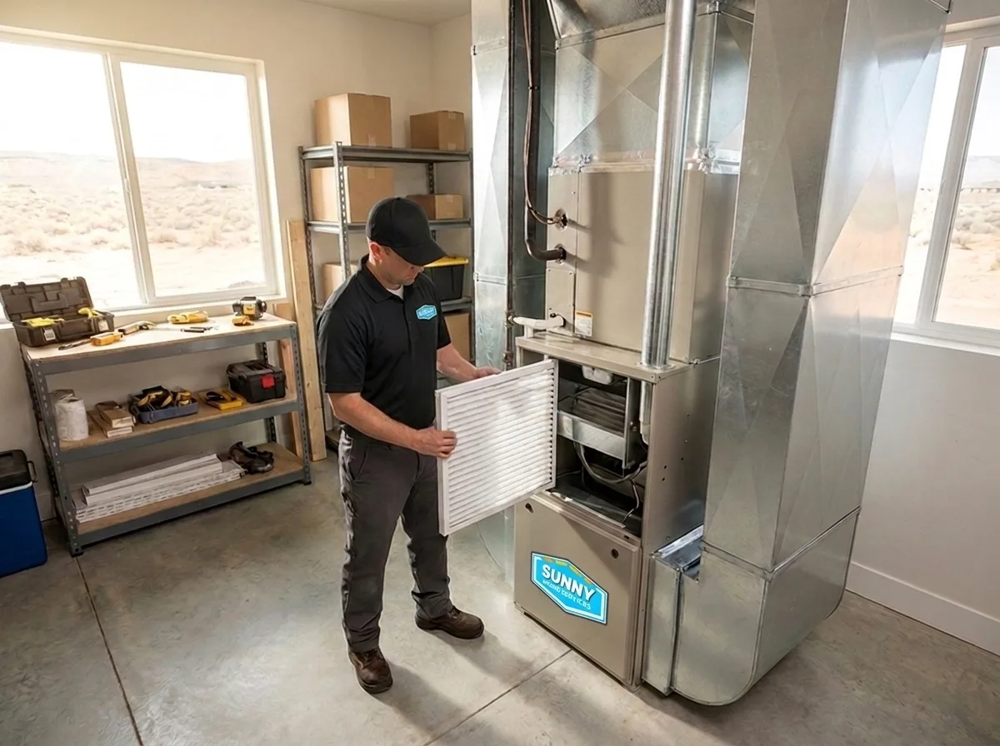

385.853.8116

Keep Your Furnace Running Smoothly When You Need It Most

At Sunny Home Services, we offer furnace maintenance throughout the Wasatch Front area to keep your system ready for whatever the Utah weather throws at it. When a winter chill rolls into the valley and cold air gets trapped against the Oquirrh foothills, you count on your heating system to be able to keep up. With routine tune-ups from our team, you can feel confident that your system is problem-free, running efficiently, and ready to handle the first hard freeze.

Living in the Wasatch Front means your furnace has to battle dry, dusty air, constant temperature swings, and a long heating season that puts more strain on it than milder climates do. Regular heating furnace maintenance keeps your system running efficiently, reduces the risk of a mid-winter breakdown, and helps your furnace last through the long, chilly winters.
While your system works hard through the heating season, dust can build up on filters and blower components, restrict airflow, and force it to work harder than it should. The daily temperature swings, with mild afternoons and freezing nights, also keep your furnace cycling on and off, adding wear on parts like the igniter, flame sensor, and heat exchanger.
Routine maintenance helps eliminate these issues with thorough inspections, cleanings, and adjustments. Our technicians carefully inspect your system, test key components, clean off dust and debris, and adjust performance, so your furnace is ready to handle the Wasatch Front climate.
When you schedule a furnace tune-up with our team, you’ll receive a top-to-bottom inspection, cleaning, and testing of your system. We follow a step-by-step checklist at every visit and take photos throughout the process so you can see the condition of your system for yourself.
Our tune-ups include:
If we find any issues during your service, we’ll explain them in plain terms, show you the photos, and give you a flat-rate price to approve before we do any work. You’ll always know exactly what’s going on and have the information needed to make the best choice for your home and budget.

Scheduling a professional home furnace tune-up along the Wasatch Front once a year prepares your system for the heating season ahead. Booking in September or October allows our team to catch small problems while the weather’s still mild and demand isn’t too high. Waiting until the last minute can leave you rushing for help when a canyon storm moves in, temperatures drop into the single digits overnight, and you’re stuck without heating on the coldest week of the year.
Between your annual check-ups, you can keep your furnace in good condition with at-home maintenance. Checking your filter monthly and replacing it on a regular schedule helps keep air flowing and takes strain off your system. If your furnace is more than 15 years old, a mid-season checkup can also catch small issues early and keep your aging system working properly through the coldest months.
At Sunny Home Services, we combine the speed and polish of a big company with the friendly honesty of a local one. Our HVAC company is designed for the Wasatch Front homeowners who are tired of choosing between out-of-state chains that treat your home like a ticket number and small shops that can’t always show up in the way you need them. Our team shows up on time, explains what your furnace actually needs in plain terms, and gets the job done right the first time.
Here’s a look at why we’re the top choice for home furnace tune-ups and maintenance along the Wasatch Front:
Tired of trying to find an appointment at the last minute? You can also join our maintenance membership to keep your HVAC system protected year-round. Members get priority scheduling, seasonal tune-ups for heating and cooling, and service discounts. For just a small fee, you’ll have year-round confidence that your furnace and AC are protected and ready for whatever the Utah weather brings.

Prepare your furnace for chilly days ahead by booking a tune-up with Sunny Home Services today. Scheduling your visit before Utah’s first hard freeze helps catch hidden issues like cracked heat exchangers and worn igniters that can leave you without heat, keeping your home warm and safe all winter long. With a clear arrival window, upfront flat-rate pricing, and full photo documentation, you’ll have peace of mind that your system is ready for the season ahead, instead of scrambling for an emergency repair in the middle of a cold snap.
Call us or book online to schedule your furnace maintenance service today. We proudly serve homes throughout the Wasatch Front and across Salt Lake, Utah, Davis, and Weber counties.